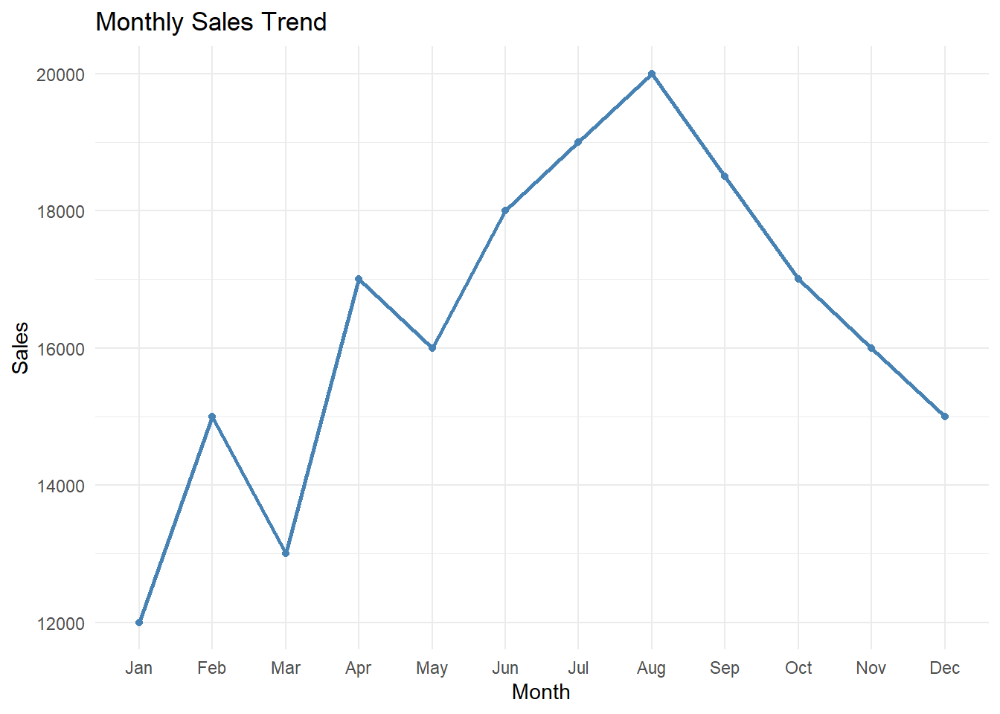
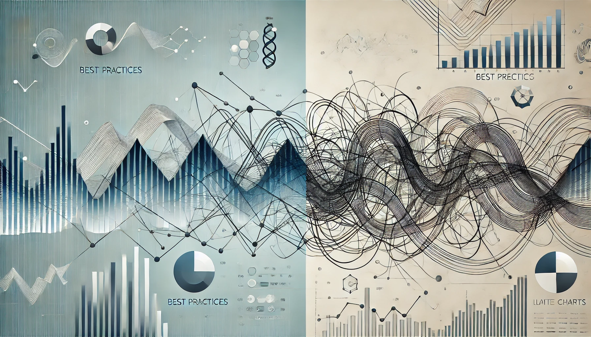
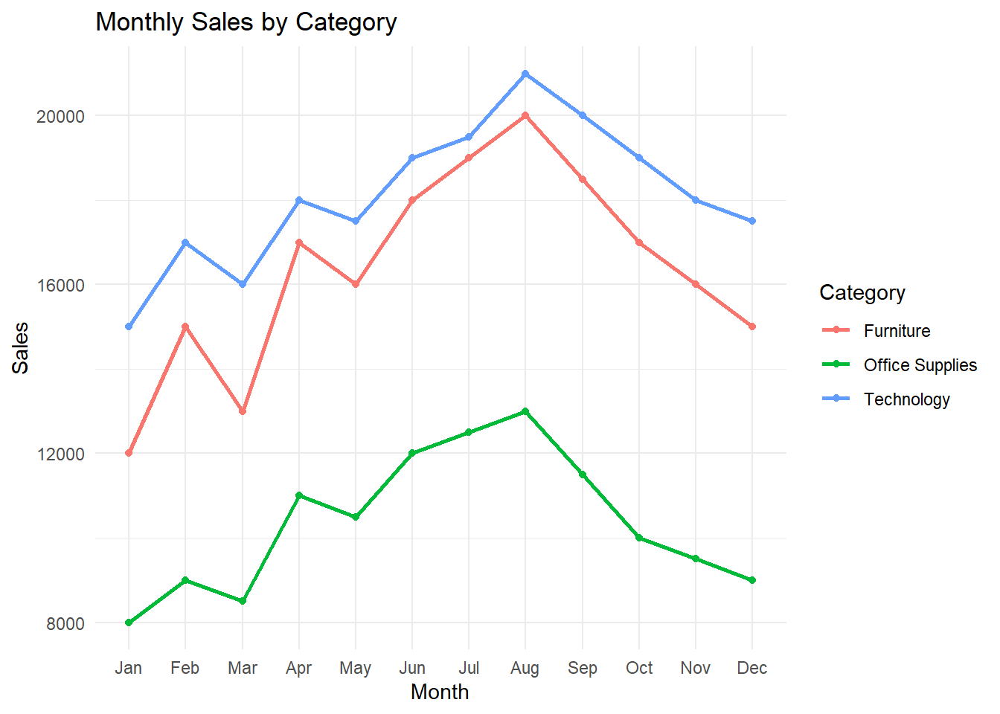
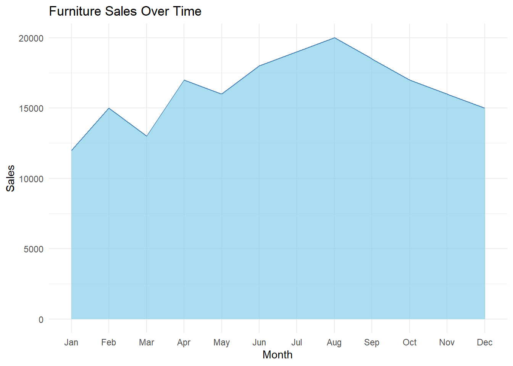
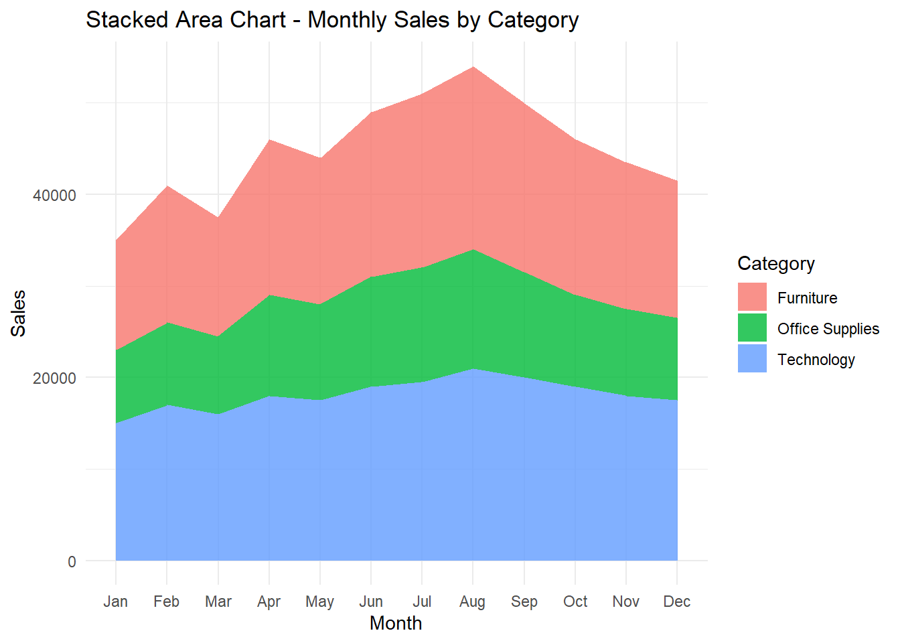
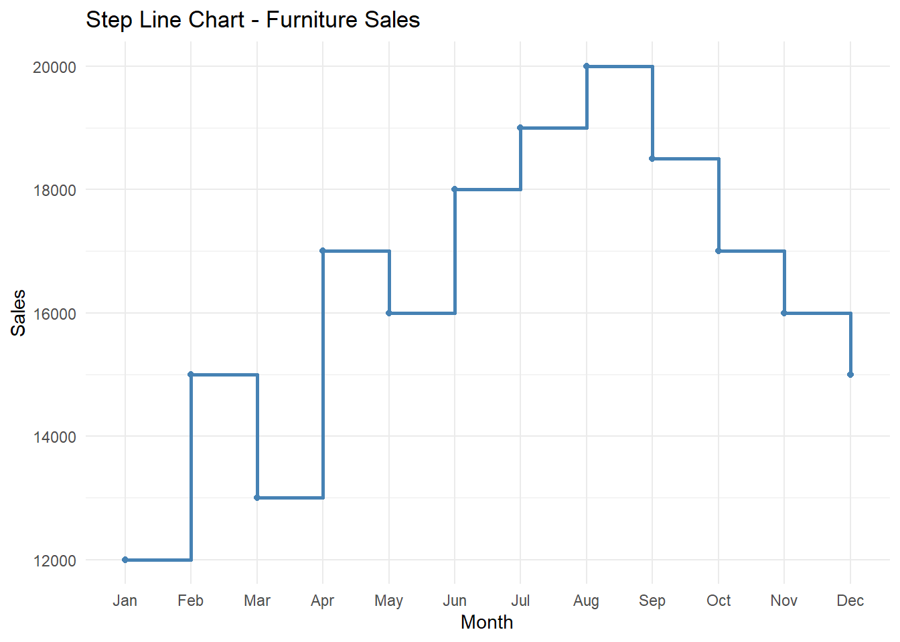
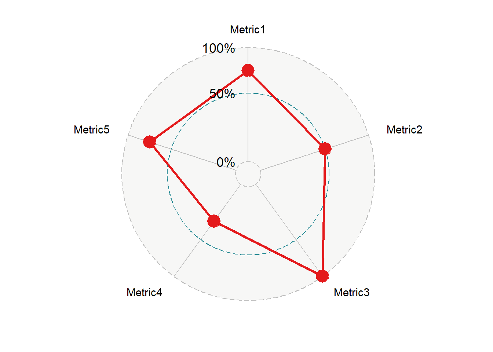

Connecting the Dots: When Line Charts Are Your Best Friend

Why Line Charts Excel at Showing Trends
If bar charts are the workhorses of data visualization, line charts are the storytellers. They’re the tool we reach for when we want to show how things change over time, from revenue growth to website traffic, from energy consumption to customer retention.
There’s a reason line charts are often the default choice for time-based data. Humans—at least in many Western cultures—tend to think of time as a straight line, flowing left to right, from past to future. This mental model makes line charts feel intuitive and natural:
They connect individual data points into a single, continuous story.
They highlight overall patterns and local changes at the same time.
They make it easy to spot trends, cycles, and outliers.
But it’s important to note that not all cultures view time as linear. In some traditions, time is perceived as cyclical, relational, or event-driven rather than a straight path from yesterday to tomorrow. In these contexts, a simple line might not be the most intuitive way to tell a data story—sometimes a circular or radial chart might resonate better.
That said, in the business intelligence world, especially in Western-style analytics environments, line charts have earned their reputation as one of the most effective ways to show continuous data over time.
What This Article Covers
In this chapter of Anatomy of a Chart, we’ll break down:
📈 The different types of line-based charts, including when and how to use each.
✅ Best practices for making your lines clean, readable, and meaningful.
❌ Common mistakes that turn trend lines into unreadable spaghetti.
🔄 When it’s time to ditch the line chart and use something else.
After all, in data visualization, choosing the right chart is half the battle—knowing how to design it is the other half.
Let’s connect the dots.
Core Line Chart Types: How & When to Use Them
Line-based charts excel at showing patterns, trends, and movements over continuous data (usually time), but they aren’t all created equal. Different variations exist, each suited for specific use cases, and picking the wrong one can confuse rather than clarify.
Let’s break down the core types of line charts, including your requested Radar Chart, with clear guidance on where they shine—and where they fall apart.
📈 Standard Line Chart – The Classic Trend Tracker
✔ What it is:
A simple line connecting data points in chronological or sequential order, showing how a single measure changes over time.
✔ Best for:
Showing trends over time (e.g., Monthly Sales, Website Traffic Over Days).
Highlighting seasonality, cycles, or patterns.
Showing momentum or acceleration.
❌ Common mistakes:
Forcing it onto categorical data where there’s no natural order.
Using it when there are gaps in data without properly handling them (leading to misleading straight-line segments).
Too much smoothing, making real fluctuations disappear.
🔀 Variations:
Smoothed Line Chart – Adds slight smoothing for aesthetics, but use sparingly.
Dashed Line Chart – Useful when indicating forecasts or projections.
🆚 Alternatives:
- If you need to show changes by category rather than time, consider a bar chart.
📈 Multi-Line Chart – Comparing Multiple Trends
✔ What it is:
A line chart with multiple lines, each representing a different group, product, or region, allowing comparisons of how trends differ.
✔ Best for:
Comparing sales across product categories over time.
Comparing website traffic across marketing campaigns.
❌ Common mistakes:
Too many lines, leading to the infamous spaghetti chart.
Poor use of color, making it impossible to distinguish lines.
Missing direct labeling, leaving users guessing what’s what.
🔀 Variations:
- Small Multiples (Panel Chart) – Breaks each line into its own small chart for cleaner comparisons (often better for 4+ lines).
🆚 Alternatives:
- For 10+ series, consider small multiples instead of cramming everything into one plot.

📈 Area Chart – Adding Emphasis Below the Line
✔ What it is:
A line chart where the area under the line is filled, emphasizing total volume along with trend.
✔ Best for:
Highlighting cumulative quantities (e.g., Total Revenue over Time).
Visualizing gaps between two measures (Revenue vs Costs).
❌ Common mistakes:
Too many overlapping areas, which obscure comparisons.
Misleading vertical stacking, making some areas seem larger than they are.
🔀 Variations:
Gradient Area Chart – With subtle color gradients for aesthetic appeal.
Layered Area Chart – Multiple areas, but designed to overlap transparently.
🆚 Alternatives:
- If the focus is just on trend comparison, a multi-line chart may be clearer.

📈 Stacked Area Chart – Part-to-Whole Over Time
✔ What it is:
An area chart where each layer stacks on top of the next, showing how components add up to a total over time.
✔ Best for:
Showing how different product lines contribute to total revenue over time.
Cumulative comparisons with a clear part-to-whole emphasis.
❌ Common mistakes:
Too many segments, making it impossible to track smaller ones.
Misinterpreting the vertical size of non-bottom layers (relative position matters more than actual height).
🔀 Variations:
- Streamgraph – A more organic, flowing version of stacked areas, useful for certain types of thematic data (music streaming, cultural trends).
🆚 Alternatives:
- For smaller part-to-whole breakdowns, consider stacked bars.

📈 Step Line Chart – For Sudden Changes
✔ What it is:
A line chart where the line steps horizontally, then vertically, instead of sloping directly between points.
✔ Best for:
Showing price changes, inventory levels, or discrete events over time.
Any data that changes in clear jumps rather than smoothly.
❌ Common mistakes:
Using it for naturally smooth trends, which makes the data harder to interpret.
Combining with unnecessary smoothing.
🆚 Alternatives:
- For smoother processes, use a regular line chart.

📈 Radar Chart – Circular Trend Comparison
✔ What it is:
A chart that plots values on spokes radiating from a central point, often used for comparing multivariate data across several dimensions (not strictly time-based, but still using lines to connect points).
✔ Best for:
Comparing performance across multiple metrics for multiple categories.
Showing profiles (e.g., customer segmentation by attributes).
❌ Common mistakes:
Overlapping lines become unreadable when comparing many categories.
Hard to judge exact values compared to simpler line or bar charts.
Poor axis scaling can exaggerate or hide differences.
🔀 Variations:
- Filled Radar Chart – Areas under the lines filled in for emphasis.
🆚 Alternatives:
If direct comparison is the goal, consider parallel coordinates plots.
If categories aren’t circular, a spider chart might be unnecessary fluff.

Summary of Line-Based Chart Types
| Chart Type | Best For | Avoid When |
|---|---|---|
| Line Chart | Single trend over time | Non-time data |
| Multi-Line Chart | Comparing multiple trends | More than ~4-5 series (use small multiples) |
| Area Chart | Emphasizing volume alongside trend | Multiple overlapping series |
| Stacked Area Chart | Part-to-whole over time | Too many segments |
| Step Line Chart | Sudden discrete changes | Continuous processes |
| Radar Chart | Multivariate profile comparisons | Exact values are important |
When to Use Line Charts (And When Not To!)
Line charts are powerful tools for visual storytelling, but only if you use them in the right context. They excel at showing continuous data over time—but when forced onto the wrong data, they can confuse your audience or even mislead them entirely.
Let’s break down:
✅ The scenarios where line charts shine.
❌ The situations where they fail.
🔄 The better alternatives for those cases.
✅ When to Use Line Charts
1. Showing Trends Over Time
Best for: Monthly sales, daily web traffic, quarterly profit margins.
Why: Continuous data naturally flows from one point to the next, and line charts preserve that sense of flow.
2. Highlighting Seasonality or Cycles
Best for: Retail sales across months, temperature changes over the year.
Why: The repeated peaks and valleys are easy to spot when shown as a line.
3. Comparing Multiple Series Over Time (But Only a Few!)
Best for: Comparing revenue across 3-4 product categories over months.
Why: Line charts handle side-by-side trend comparisons well, as long as you don’t overcrowd them.
4. Tracking Cumulative Progress (Area or Step Line)
Best for: Cumulative sales over time, project burn-down charts.
Why: Area charts and step lines emphasize total value build-up or discrete changes.
❌ When Not to Use Line Charts
1. When the Data is Categorical, Not Sequential
Example: Customer satisfaction by region.
Why it’s bad: Regions aren’t a timeline, and forcing a line makes no logical sense.
✅ Use a bar chart instead.
2. When Comparing Too Many Series (Spaghetti Chart Syndrome)
Example: Website traffic across 20 marketing channels.
Why it’s bad: Too many lines overlap, making patterns unreadable.
✅ Use small multiples or a heatmap instead.
3. When Data Has Irregular Gaps That Matter
Example: Irregular equipment downtime events.
Why it’s bad: Line charts often draw straight lines through gaps, misleading users into thinking there’s continuous data.
✅ Use a stepped line chart, timeline chart, or dot plot to show actual data points.
4. When Exact Values Matter More Than Trends
Example: Quarterly profit breakdown per region.
Why it’s bad: Line charts emphasize the shape of the trend, not precise values.
✅ Use a table with conditional formatting or a bar chart.
5. When There’s No Natural Order to the Data
Example: Survey responses by job title.
Why it’s bad: There’s no inherent flow between categories.
✅ Use a bar chart.
🔄 When to Consider Alternatives
| If Your Goal Is… | Better Option |
|---|---|
| Compare categories | Bar Chart |
| Track time-based patterns (1-3 series) | Line Chart |
| Track time-based patterns (4+ series) | Small Multiples |
| Show cumulative progress | Area Chart |
| Emphasize values over trends | Table / Heatmap |
| Show part-to-whole over time | Stacked Area Chart |
Final Thought
Line charts work best when they do what they were designed for: showing how something changes over time. If the data doesn’t have a natural flow, if there are too many overlapping series, or if the goal is to show precise values rather than trends, it’s time to choose a different chart.
Pro Tips & Best Practices for Line Charts
Line charts are deceptively simple—just connect the dots, right? But small design decisions can dramatically impact how easy (or difficult) it is for your audience to follow the story your data is telling. Let’s cover some practical tips and common pitfalls to help you make line charts that are as clear as possible.
✅ 1. Limit the Number of Lines
Why it matters:
The human eye can comfortably track 3-4 lines at most in a single chart. Beyond that, you risk creating the dreaded spaghetti chart, where individual trends become impossible to follow.
Best practice:
If you have 5 or more categories, strongly consider small multiples instead (separate mini-charts for each series).
Use consistent colors for similar categories across multiple charts (e.g., always make “Technology” blue and “Furniture” green).
✅ 2. Label Lines Directly (Skip the Legend When Possible)
Why it matters:
When users have to constantly glance back and forth between the chart and a separate legend, it slows down comprehension.
Best practice:
Place category labels directly next to the ends of the lines.
If you must use a legend, keep the number of series low and ensure the colors are easy to distinguish.
✅ 3. Use Color Sparingly
Why it matters:
Too many bright or clashing colors overwhelm the eye and make it difficult to focus on the actual data.
Best practice:
Use neutral grays for less important series and highlight colors (blue, red) for key lines.
Avoid rainbow palettes—color should convey meaning, not just decoration.
✅ 4. Choose the Right Level of Smoothing
Why it matters:
Over-smoothing can erase real spikes and events, while under-smoothing can make **small fluctuations look like important trends.
Best practice:
For financial, scientific, or sensor data, avoid smoothing entirely—report the data as-is.
For presentational dashboards, light smoothing is sometimes acceptable (but use sparingly).
✅ 5. Handle Missing Data Transparently
Why it matters:
By default, line charts connect the dots, even if some data points are missing. This can mislead viewers into thinking data existed where it didn’t.
Best practice:
Use gaps or dotted line segments to indicate missing periods.
Consider using point markers to emphasize actual recorded data.
✅ 6. Use Consistent Time Intervals
Why it matters:
Mixing daily, weekly, and monthly data in a single line chart distorts trends because the time intervals aren’t uniform.
Best practice:
Choose a consistent granularity that fits the story you’re telling.
If you must mix intervals, label the axis clearly and use different line styles to indicate the change.
✅ 7. Avoid 3D Effects and Unnecessary Embellishments
Why it matters:
Line charts work because they’re simple. Adding shadows, gradients, or 3D effects distracts from the data.
Best practice:
Stick to clean, flat lines.
Focus on clarity over decoration.
Final Thought
Line charts should do one thing well: show how something changes over time. Every design decision should make that story clearer, not more complicated. If you stick to a small number of well-labeled, cleanly styled lines, your chart will do exactly what it’s supposed to—help people see the shape of the data at a glance.
Final Takeaways
Line charts aren’t just tools — they’re storytellers. They show where we’ve been, where we are now, and where we might be headed. Their strength comes from their simplicity: connecting data points into a clear, flowing visual that reveals patterns we’d struggle to see in tables alone.
But that simplicity is also their biggest risk. Add too many lines, force them onto the wrong data, or design them poorly, and their story turns into noise.
Key Takeaways
✔ Line charts excel at showing trends over time.
They’re perfect for time-series data — from monthly sales to daily temperatures — because they reflect how people (especially in Western cultures) think about time as a continuous flow.
✔ Keep it clean.
Limit the number of lines, use consistent colors, and label directly whenever possible.
✔ Data gaps matter.
If you’re missing data, don’t pretend it’s there. Be explicit with dotted lines, gaps, or markers.
✔ Match the chart to the audience.
A dashboard for analysts might tolerate more complexity than a chart in a C-level presentation. Tailor the level of detail, smoothing, and color usage to your audience’s expectations and skill level.
✔ Sometimes, another chart works better.
If you’re comparing categories, use a bar chart. If you have too many trends, small multiples might be clearer. If precision matters more than trends, use tables or heatmaps.
The Bottom Line
A well-designed line chart can turn raw data into clear insights — showing whether performance is steady, rising, or falling. But it’s only the right tool if the story is about change over time. When that’s the case, line charts are your best friend.
What’s Next?
This was Episode 2 in the Anatomy of a Chart series.
Next up:
📍 Episode 3: Point & Shape-Based Charts – When Position Tells the Story
We’ll break down scatter plots, dot plots, bubble charts, and more — explaining when position and density say more than size or length.